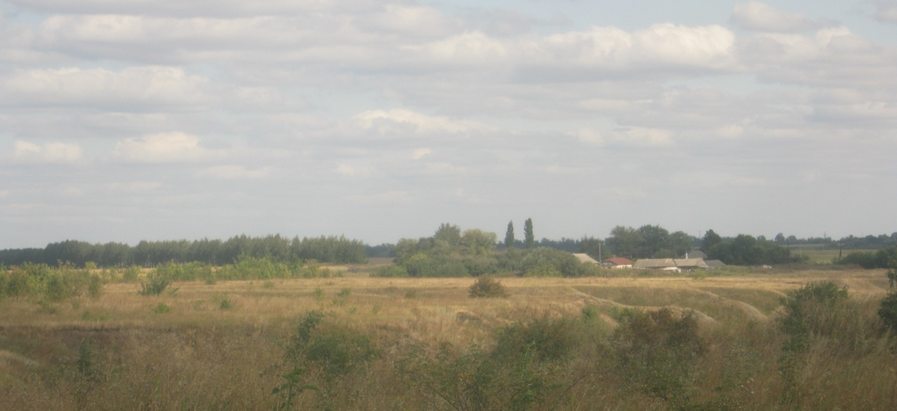

Селищев
Как известно, Селищевы были из простых крестьян, выделялись среди воловцев. Так, в марте 1906 года выборщиком в Орловское губернское избирательное собрание был назначен 32-летний Яков Михайлович Селищев из Ливенского уезда, значился как «грамотный» и состоял в родстве с семьей Селищевых. С 10 лет Афанасий работал в булочной у богатого купца Панова, помогал доставлять булки и крендели в местную лавку. Затем мальчик был отдан в школу. Известно, что среди местных старожилов есть такое свидетельство: воловский богатей Пикалов привел своего сына в школу и стал просить учительницу: «Посадите моего балбеса с Афонькой Селищевым».  Слух о незаурядных способностях Афанасия распространился очень быстро. Любознательный и на редкость прилежный паренек стал лучшим учеником в Воловской земской школе. Трудно предположить, как сложилась бы его судьба, не поддержи его один из учителей, настоявший перед земством о выделении Афанасию стипендии для продолжения учебы в Ливенском реальном училище. Вместе с сыном урядника он отправляется в Ливны. И здесь паренек оказывается одним из лучших. В 1906 году Афанасий Селищев получает аттестат об окончании основного отделения. Через год, окончив еще один класс, успешно сдал экстерном экзамен за полный курс гимназии в Курске и стал студентом Казанского университета, историко-филологического факультета. Его трудолюбие, тяга к знаниям были замечены профессорами Александровым и Петровским. Они помогали юноше овладеть азами словесности, дали возможность получить копии славянских рукописей. По окончании учебы А.М. Селищев получает диплом I степени и остается при университете «для приготовления к профессорскому званию на кафедре славянской филологии». Появляются его научные работы, которые своим содержанием привлекли внимание многих специалистов. В 1913 году он был утвержден преподавателем университета, а уже в следующем - его командировали за границу, в славянские земли. После изучения в Югославии, юго-западной Болгарии языка и быта южных славян, Афанасий Матвеевич Селищев пишет отчет, публикует ряд научных работ, очерков по этой теме. В 1918 году профессор А.М. Селищев возглавляет кафедру славянской филологии в Иркутском университете, а в 1921 году становится профессором Московского университета. В эти же годы публикуются его многочисленные труды, в основу которых легли глубокие и всесторонние исследования южно-славянских языков. Афанасий Матвеевич с большим увлечением изучал местные говоры, в частности, воловские и ливенские. Заслуга Афанасия Матвеевича Селищева перед отечественной наукой огромна. В 1929 году он был избран членом-корреспондентом Академии наук СССР, в 1930 году - членом-корреспондентом Болгарской Академии наук, затем - почетным членом научного общества Македонии. Большой интерес представляют работы ученного по истории, диалектологии русского языка, сравнительной грамматике славянских языков («Введение в сравнительную грамматику славянских языков»), исторической диалектологии маке#донского языка, по общим проблемам славянского языкознания, балканистике, палеографии, топонимике. В статье «О языке современной деревни» А.М. Селищев прослеживает фонетические, морфологические и синтаксические изменения в языке деревни 30-х годов, показывает исчезновение архаических явлений и возникновение новых в связи с социальными преобразованиями. Совсем недавно в фондах Российского архива литературы и искусства была обнаружена интереснейшая работа «Говоры Ливенского уезда», основанная на изучении речевого, этнографического и бытового материала жителей Воловского, Тербунского, Измалковского районов Липецкой области. Работа содержит также сведения об истории заселения территории между Ельцом и Ливнами. Работы «Славянское языкознание» и «Старославянский язык» подытоживают исследования А.Н. Селищева по славянским языкам. Но не все гладко складывалось в судьбе нашего земляка. В феврале 1934 года он был арестован по подозрению в принадлежности к партии «русских фашистов». На следствии А.Н. Селищев виновным себя не признал, но, тем не менее, 10 апреля был заключен в исправительно-трудовой лагерь в Казахстане сроком на 5 лет. Постановлением Президиума Московского городского суда от 26 октября 1964 года он был реабилитирован, но услышать об этом ученому не удалось: 6 декабря 1942 года он скончался в возрасте 56 лет. Признавая выдающиеся заслуги нашего земляка, в день 115-летия его рождения, была открыта мемориальная доска на доме Афанасия Матвеевича Селищева. Пусть это будет, хотя и запоздалым, но знаком благодарности, признательности, памяти потомков Селищева Афанасия Матвеевича, ученого филолога, члена-корреспондента Академии наук СССР, славному гражданину своей великой Родины.
Смотрите так-же:
Контакты
Телеграм:t.me/lippeleng
E-mail: peleng99@yandex.ru.ru
{kind=link}
{kind=link}
{kind=link}
{kind=link}